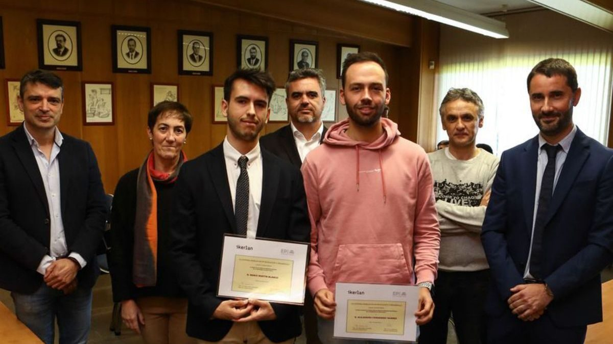

Ayudas a la investigación en proyectos I+D+i 2025
En el marco de la Cátedra Ikerlan de Investigación y Desarrollo de la Universidad de Oviedo.
Objeto de la convocatoria
El objeto de esta convocatoria es promover la realización de proyectos de I+D+i que refuercen la colaboración entre el Centro Tecnológico Ikerlan y la Universidad de Oviedo y que fomenten la iniciación de estudiantes de Ingeniería en tareas de investigación y transferencia tecnológica.
¿Quién puede solicitarla?
El/la Investigador/a Principal que opte a esta convocatoria deberá ser profesor/a o investigador/a de la Universidad de Oviedo con contrato vigente, al menos, durante el periodo de desarrollo del proyecto presentado.
Financiación
La financiación permitirá formalizar periodos de prácticas extracurriculares a estudiantes de la Universidad de Oviedo, que estén cursando estudios oficiales de Grado y Máster, para facilitar su participación en actividades de I+D+i, como un primer paso a la realización de una Tesis Doctoral y su futura orientación profesional y/o investigadora.
La presente convocatoria financiará un total máximo de 4 proyectos con una aportación bruta total de 2.500 euros por proyecto. Los proyectos presentados deberán enmarcarse en una de las líneas de especialización definidas por Ikerlan, en las bases de la convocatoria. La no pertenencia a alguna de estas líneas implicará la no financiación del proyecto.
Plazo y solicitudes
El plazo de presentación comenzará el día siguiente al de publicación de esta convocatoria y finalizará 15 días naturales después, el 26 de febrero de 2025, incluido.
Las solicitudes serán dirigidas a la Fundación Universidad de Oviedo antes del 26 de febrero de 2025, incluido.
Premios y convocatorias anteriores

Mario Martín y Malena Potesta reciben los premios de la Cátedra Ikerlan
Premios a mejor expediente del máster en Ingeniería Mecatrónica y mejor TFG 2021/2022 en Desarrollo y Transferencia Tecnológica.
Leer noticia
Convocatoria Premios Cátedra Ikerlan 2021-2022
Premio al mejor expediente en Ingeniería Mecatrónica y Premio TFG sobre innovación y transferencia tecnológica del curso 2021-2022.
Leer noticia
I Concurso Ideas Cátedra Ikerlan
En la visita a las instalaciones de Ikerlan, el 26 de octubre de 2022, se celebró la final del I Concurso Ideas Cátedra Ikerlan.
Leer noticia
Alejandro Fernández y Mario Martín premiados por la Cátedra Ikerlan
Premios al mejor TFG en Ingeniería Mecánica y Tecnologías Industriales y al mejor expediente de primer año del máster en Ingeniería Mecatrónica.
Leer noticia